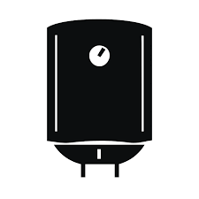
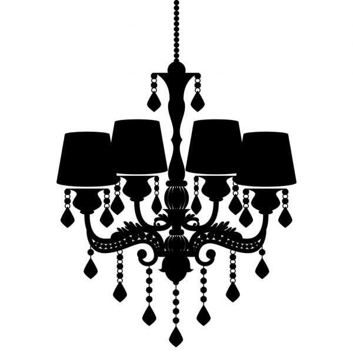
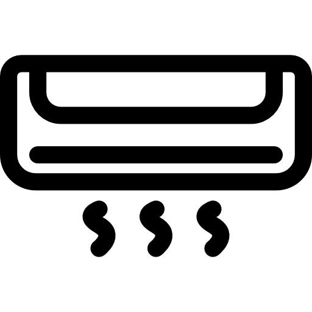

ПРО НАС
Шановні співвітчизники!
Раді вітати Вас на нашій інтернет-сторінці нашої компанії «Бу&Ко», яка увібрала в себе вітчизняних інженерів, науковців, підприємців, та винахідників з різних куточків нашої країни. Ми маємо за мету пошук кращих світових інженерно-прикладних розробок, модернізацію таких, застосування в повсякденному житті за-для покращення Вашого комфорту та добробуту населення вцілому.
Наразі, в умовах зміни клімату, не ефективного рівня енергоощадності домогосподарств України, високої вартості споживаних енергоресурсів, злочинності та власної безпеки, найдоцільнішою для імплементації є технологія «Розумний будинок», яка нами освоєна та вже застосовується у Вінницькій та Києвській областях.
України, високої вартості споживаних енергоресурсів, злочинності та безпеки оселі, найдоцільнішою для імплементації є технологія «Розумний будинок», яка нами освоєна та вже застосовується у Вінницькій та Києвській областях.
Обладнання
Опис технології
Багатофункціональна система «Розумний будинок» складається з декількох підсистем та покликана заощадити споживані за відсутності власника енергоресурси, забезпечити та моніторити різносторонню безпеку Вашої оселі, значно підвищити комфорт перебування в помешканні та довготривалого проживання шляхом «допомоги» в «підлагоджуванні функціонування електричних, побутових, радіо-електронних, інформаційних, електро-механічних та інших приборів до потреб господаря».
Опис і можливості «самої масової і універсальної технологи з подорожувати 4 модулями»
Так, прикладом може слугувати різновид найпопулярнішої серед споживачів \ замовників такої розумної технології РБ-1, яка складається з:
- 
Бойлер
Штори
- 
Люстра
- 
Конвектор (індивідуальне опалення та\або кондиціонер).
Замовник (господар) на електричному щиті-розподілювачі завчасно встановлює час увімкнення \ вимкнення, дату, час та інтенсивність роботи принаймні 4 модулів (приборів) так, аби, наприклад, до повернення з роботи бойлер нагрів теплу воду, штори закрилися, люстра (навіть до входу в будинок) розігрілася та\або видавала встановлену яскравість освітлення, а конвектор \ кондиціонер вирівняв температуру приміщення до потрібної Вам. В якості додаткових опцій можливе встановлення різних фото-відео-аудіо фіксуючих засобів типу відео нагляд з виводом сповіщення, відтворення в реальному часі та керуванням на смартфон власника; керування дистанційне центральним пунктом системи «розумного будинку» за-для завчасної зміни деяких параметрів до Вашого повернення додому; обмеження доступу до певних внутрішніх приміщень, поки Ви відсутні вдома та керування ними через (найчастіше) смартфон або інший гаджет.
наиболее часто НАМИ Испоьзуемое оборудование
Наші партнери
Наразі, наші надійні партнери, які є лідерами в країнах Європейського союзу, в Україні не представлені і самостійно виконувати монтажні та пуско-налагоджувальні роботи не можуть. Саме тому — компанія «Бу&Ко», яка складається з вітчизняних науковців, інженерів та підприємців, бере за основу перевірене обладнання та компоненти і, за потреби, доповнює власними модифікаціями, котрі вже довели свою ефективність; надає первинні консультації з виїздами на об’єкти; поширює обізнаність серед населення; впроваджує в життя «корисні технології», підвищуючи добробут та якість життя населення; проводить монтаж та пусконаладку під ключ; забезпечує сервісне обслуговування після завершення офіційної гарантії виробником. Саме з нашою допомогою найкраще обладнання та найіноваційніші технології систем «Інноваційного Будинку» виробників з Італії та Німеччини імплементуються в Україні вже сьогодні.
- Сертификаты качества и происхождения продукции
- Презентацию или каталог продукции Поставщика
- Бланк-анкета для просчета нами коммерческого предложения
- Доовор о сотрудничестве
Вартість наших продукцій
Эконом
-
922$ без монтажа.
-
Универсал
-
1306$ без монтажа.
VIP
-
1306$+ без монтажа.
Гарантия 24 мес.